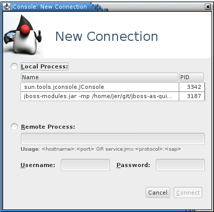

Author: Lagarde Jeremie
Level: Intermediate
Technologies: CDI, JMX, MBean
Summary: The helloworld-mbean quickstart demonstrates the use of CDI and MBean in JBoss EAP and includes JConsole instructions and Arquillian tests.
Target Product: JBoss EAP
Source: https://github.com/jboss-developer/jboss-eap-quickstarts/
The helloworld-mbean quickstart demonstrates the use of CDI and MBean in Red Hat JBoss Enterprise Application Platform. The project also includes a set of Arquillian tests for MBeans.
The example is composed of the following MBeans:
AnnotatedComponentHelloWorld: This MBean is a managed bean with ‘@MXBean’ annotation.
MXComponentHelloWorld: This MBean is a managed bean with ‘MXBean’ interface.
MXPojoHelloWorld: This MBean is a pojo using MXBean interface and declared in the jboss-service.xml file.
SarMXPojoHelloWorld: This MBean is a pojo using MXBean interface and declared in jboss-service.xml in SAR packaging.
The application this project produces is designed to be run on Red Hat JBoss Enterprise Application Platform 7 or later.
All you need to build this project is Java 8.0 (Java SDK 1.8) or later and Maven 3.1.1 or later. See Configure Maven for JBoss EAP 7 to make sure you are configured correctly for testing the quickstarts.
In the following instructions, replace EAP7_HOME with the actual path to your JBoss EAP installation. The installation path is described in detail here: Use of EAP7_HOME and JBOSS_HOME Variables.
The following shows the command line to start the server:
For Linux: EAP7_HOME/bin/standalone.sh
For Windows: EAP7_HOME\bin\standalone.bat
Type this command to build and deploy the archive:
mvn clean wildfly:deploy
This will deploy helloworld-mbean-webapp\target\jboss-helloworld-mbean-helloworld-mbean-webapp.war and helloworld-mbean-service\target\jboss-helloworld-mbean-helloworld-mbean-service.sar to the running instance of the server.
This quickstart differs from the other quickstarts in that it uses ‘JConsole’ to access and test the quickstart rather than access an URL in the browser. If you do access http://localhost:8080/jboss-helloworld-mbean-helloworld-mbean-webapp/, you will see a screen shot image of the JConsole application,
The following sections describe how to use ‘JConsole’ to inspect and test the MBeans.
To connect to the JBoss EAP server using JConsole, open a command prompt and type the following command :
For Linux: JDK_HOME/bin/jconsole
For Windows: JDK_HOME\bin\jconsole.exe
Select the local org.jboss.modules.Main process and click Connect.

A dialog displays with the warning “Secure connection failed. Retry insecurely?”. Click Insecure to continue.
You can use JConsole to inspect and use the MBeans :
quickstarts in the left column of the console.quickstarts, you see the 4 MBeans: AnnotatedComponentHelloWorld, MXComponentHelloWorld, MXPojoHelloWorld, and SarMXPojoHelloWorldOperations –> sayHello.sayHello button.
AnnotatedComponentHelloWorld and MXComponentHelloWorld examples, you will see a popup Window displaying Hello <your name>!.MXPojoHelloWorld and SarMXPojoHelloWorld examples, you will see a popup Window displaying Welcome <your name>!.When you are finished testing, type this command to undeploy the archive:
mvn wildfly:undeploy
You can also start the server and deploy the quickstarts or run the Arquillian tests from Eclipse using JBoss tools. For general information about how to import a quickstart, add a JBoss EAP server, and build and deploy a quickstart, see Use JBoss Developer Studio or Eclipse to Run the Quickstarts
This quickstart consists of multiple projects and requires installation of the “JBoss Tools Maven Packaging Configurator”, so it deploys and runs differently in JBoss Developer Studio than the other quickstarts.
Help –> JBoss Central.Software/Update tab at the bottom of the JBoss Central.Maven section, select the “JBoss Tools Maven Packaging Configurator” and click Install/Update.jboss-helloworld-mbean parent project and choose Maven –> Update Project.... Select all projects and click OK.helloworld-mbean-helloworld-mbean-service project and choose Run As –> Run on Server. helloworld-mbean-helloworld-mbean-webapp project and choose Run As –> Run on Server. If you want to debug the source code of any library in the project, run the following command to pull the source into your local repository. The IDE should then detect it.
mvn dependency:sources